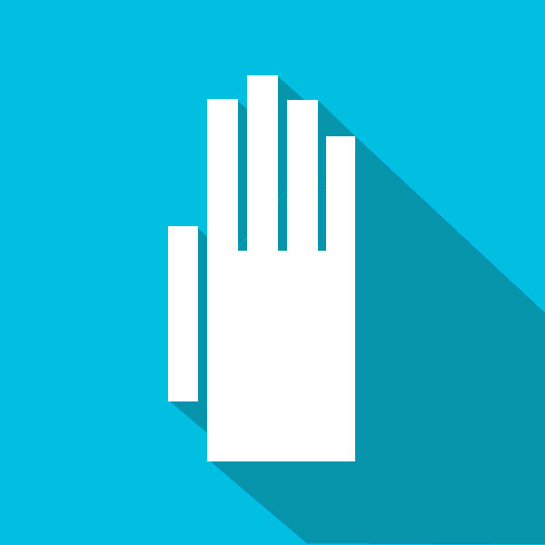
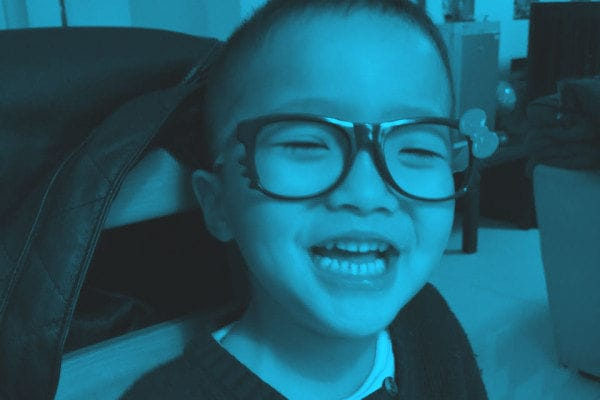
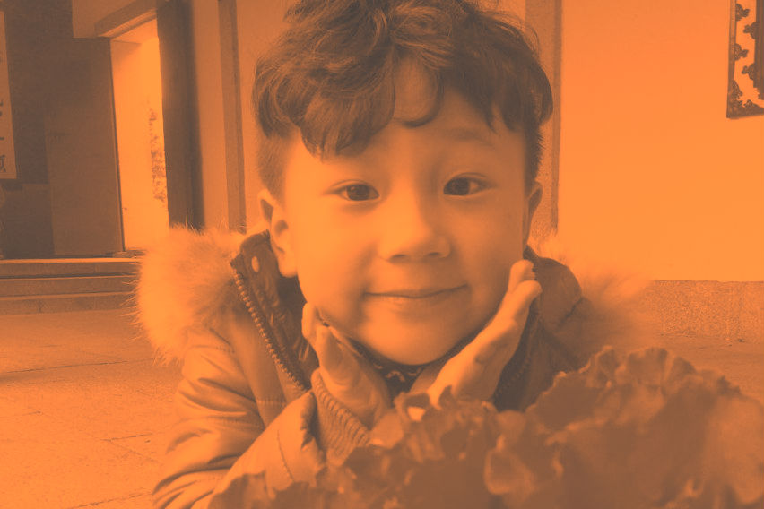

主页
参与
FAQ
关于
用你所学
为孩子们设计一只最酷炫的3D打印机械手

你有好好看过自己的手吗？
我们用它工作
用它生活
用它表达情绪
用它牵住你所爱的人

可是，你知道吗？
在我们身边，却有很多孩子却从一出生，就缺失着这生命中重要的一部分
中国大约有2400万肢体残疾人口
三分之二家庭经济条件相对困难
其中4.6%为0至14岁的儿童
虽然科技的进步已经让我们发明出了义肢
可是极高的成本 复杂的制作和装备流程
不是每一个家庭都承担的起一支义肢
用一双手去拥抱、去抚摸、去操作，如此简单的动作
却是那些孩子与父母每一日不能承受的奢望

3D打印，一種嶄新的希望
以數字模型文件為基礎，運用粉末狀金屬或塑料等可粘合材料，通過逐層堆疊累積的方式來構造物體的技術。過去其常在模具製造、工業設計等領域被用於製造模型，現正逐漸用於一些產品的直接製造。
3D打印机械义肢
• 主要部件3D打印
• 500元左右，成本降低将近千倍
• 纯机械传动，方便装卸更换，无手术风险
• 已实现基本的抓握功能
• 高度定制化
• 持续改进空间
展翼計劃
我們已經開展各方面工作包括产品研发、组织管理、运营、线上平台开发等，希望以3D打印技為孩子和家長點亮這種希望
我們的步伐
• 腾讯公益众筹到部分启动资金
• 基于国外3D打印公益开源社区(EnablingtheFuture)义肢模型研发了第一版机械手模型
• 在北上广三地举办了三场志愿工作坊，制作了第一批16只可使用的3D打印义肢，已全部配送给受助者，工作坊志愿者参与100+，社交平台传播量10万＋
• 项目入驻清华X-Lab，拟以社会企业（Social Enterprise）的形式运营
• 对接3D打印企业、基金会、企业CSR部门等各种资源
设计师团队招募
在项目进行的过程中，我们发现除了受助者需求的收集以外，我们遇到的更大问题在于设计师资源的缺乏，在针对不同残疾情况的适配过程中，需要大量的3D模型设计、机械设计、医疗相关的知识与资源补充，我们希望能组建一个由3D模型设计师、机械设计师、医疗相关人员组成的社区，共同进行3D打印义肢的研发。
如果你：
对公益创客工作有热情，感兴趣 or
有基本的3D建模设计经验 or
有3D打印相关经验 or
机械设计相关经验 or
具备残疾人医疗相关知识 or
愿意投入自己的部分时间精力到这个项目中
我们欢迎你加入Hands-On 3D打印义肢的设计师社群中来，为弱势群体贡献自己的力量。